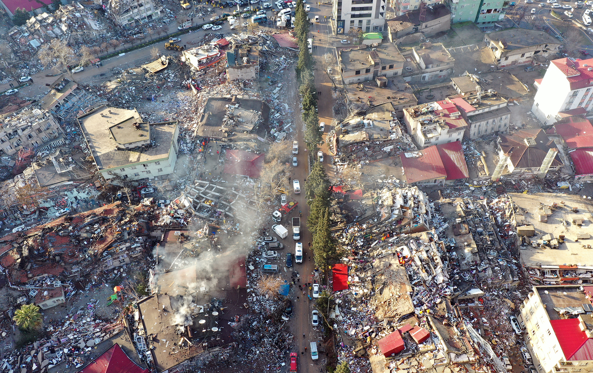
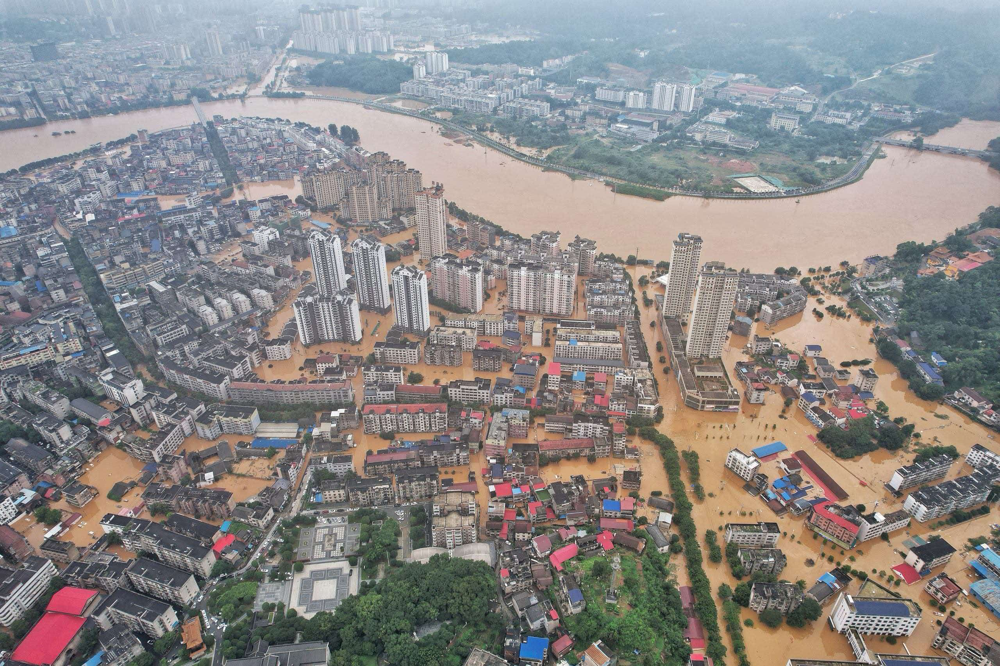
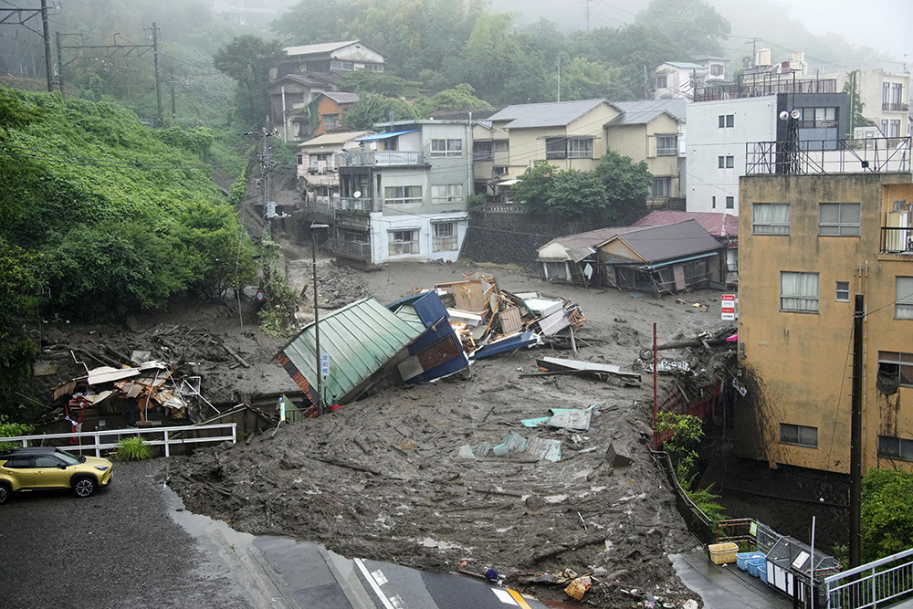
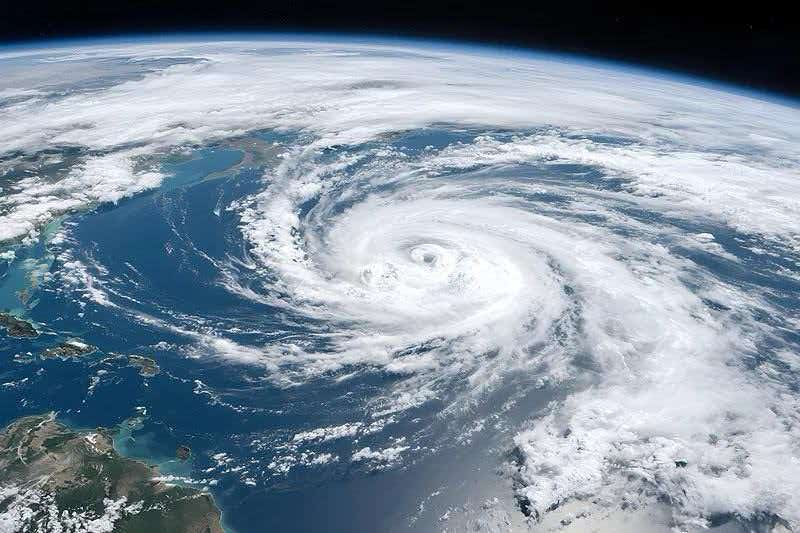
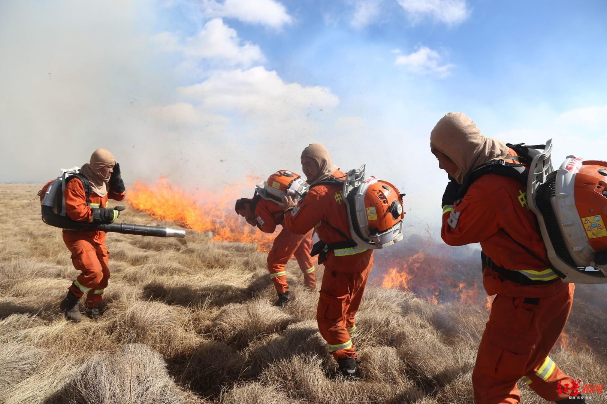

实时新闻
常见自然灾害

地震灾害
地震，俗称地动
是壳快速释放能量， 造成岩层震动产生地震波的一种自然现象
主要类型
构造地震 火山地震塌陷地震 诱发地震
简要避震原则
震时就近躲避 震后迅速撤离
海洋灾害
海洋灾害，是海洋环境发生剧烈异常变化， 在海上、沿海地带引发的灾害
主要类型
风暴潮 海啸海冰 赤潮
咸潮入侵
基础避险要点
关注海洋预警 及时撤往高地
地质灾害
地质灾害，是自然地质作用或人为活动引发威胁生 命财产安全的地质现象
主要类型
崩塌 滑坡泥石流 地面塌陷
地面沉降
基础避险要点
密切关注灾害预警 远离陡坡崖角
气象灾害
气象灾害是由大气异常活动引发的灾害
主要类型
暴雨 洪涝台风 干旱
寒潮 沙尘暴
高温热浪
基础避险要点
及时关注气象预警 遇突发气象速入室内
生物灾害
生物灾害，是有害生物爆发、侵袭， 造成农林减产、生态破坏，甚至危害人体健康的灾害
主要类型
鼠害 疫病农林病虫害 有害生物入侵
基础避险要点
做好巡查监测 远离不明生物历史重大自然灾害

研究灾害史，不为预知天灾，而为从历史中调整应对之道——把血的教训，变成下一次的防线。
常见灾害的应急措施

掌握应急技能，不为直面危难，而为险情前守住一线生机——把自救的本领，化作护佑生命的盾牌。